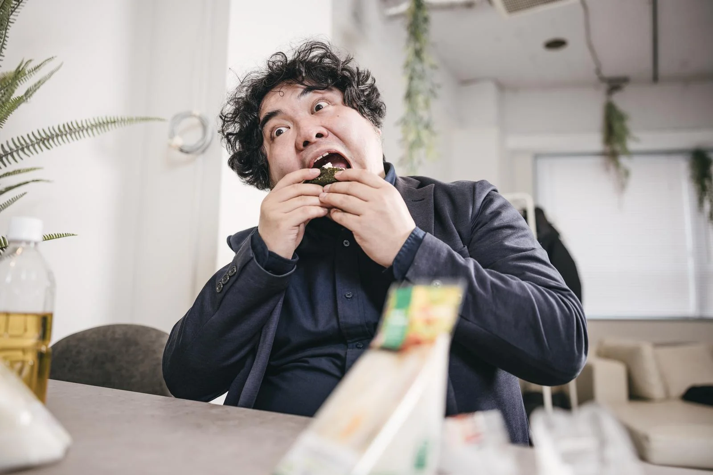

冨樫大和 | Togashi Yamato
開志専門職大学2年 おにぎりをこよなく愛する19歳学生。三度の飯よりおにぎり。どうぞよろしくお願いします。 
開志専門職大学 情報学部2年の冨樫大和です。
この世に存在するすべての食べ物の中で、何よりもおにぎりを愛しており、人生の最終目標は私自身がおにぎりになることです。
近頃はおにぎらずのような料理が出てきていますが関係ありません。私が握り潰します。
最近では、街の中におにぎり専門店が増えたりと、おにぎり界隈が賑わっているのを毎日肌でニギニギと感じています。 良い傾向ですね、いつか食べてみたいものです。
本日は、当サイトを閲覧いただき誠にありがとうございます。ぜひ最後までご閲覧ください。